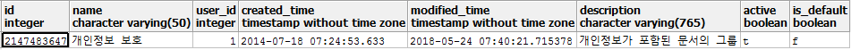
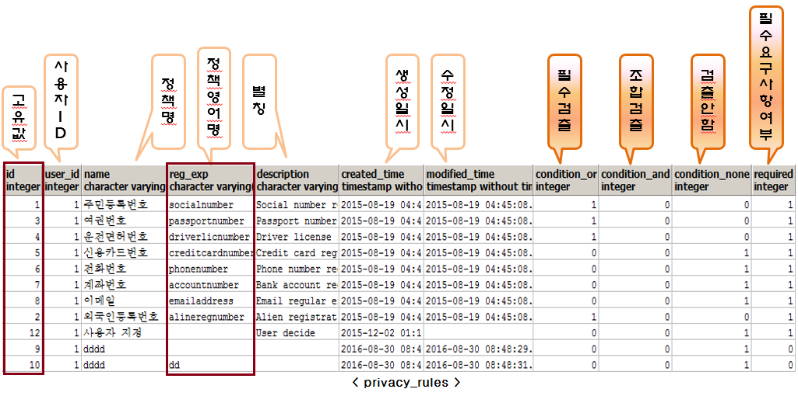

개인정보 보호 정책 (groups, privacy_rules)
개인정보 보호 정책은 groups 테이블에 id 가 2147483647 이다.
SELECT *
FROM groups
where id = 2147483647
출력 결과

개인정보 보호 정책의 정책 값은 privacy_rules 에 저장된다.

privacy_rules 의 id 값과 reg_exp 의미
-
id 값이 1~8 까지는 정책센터 관리자가 지정한 정책에 의해 개인정보를 검출함 (예: 주민등록번호)
-
id 값이 9~11 까지는 정책센터 관리자가 생성한 정규식에 의해 검출됨 (예: 문서에 dd 라는 문자열이 있으면 검출됨)
-
id 값이 12 (사용자 지정) 이면, ShadowCube 클라이언트 사용자가 생성한 규칙에 의해 검출되는 조건
이전